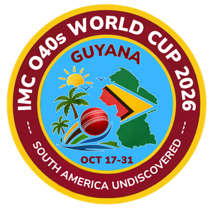

Welcome to England Over 40s Cricket
Experience the passion, skill, and camaraderie of masters cricket at an international level.
Fixtures & Results World Cup 2026
IMC Over 40s World Cup 2026
The IMC Over 40s World Cup will be held in Guyana in October 2026. England Over 40s will be among 16 nations travelling to compete. Follow England's journey on the dedicated World Cup hub.
World Cup HubFixtures & Results
Open the Fixtures & Results hub for match schedules, archived results, Play-Cricket scorecards, live streams, highlights, and venue maps.
View Fixtures & ResultsLatest News
England Over 40s Cricket and The Forty Club (XL) have confirmed an informal development understanding — a shared commitment to keeping the Spirit of Cricket alive for players aged 40 and above.
Read MoreAbout Us
England Over 40's Cricket is a voluntary, non-profit making organisation, self-funded by its recreational players to continue to engage cricketers above the age of 40yrs to play in veterans matches and tournaments at an international level, whilst at the same time promoting physical and mental well-being through sport and team sociability.
Read MoreBecome a Partner
Put your brand at the heart of England Over 40s Cricket. Explore sponsorship opportunities across international matches, live streaming, and year-round digital content.
Explore SponsorshipMedia Hub
Watch live streams, match highlights, and browse matchday photography — team photos, player portraits, and action shots from every England Over 40s match.
Visit Media HubPlayers & Officials
Interested in representing England Over 40s as a player, umpire, or scorer? Visit our portal to apply and join the selection process.
Apply Now